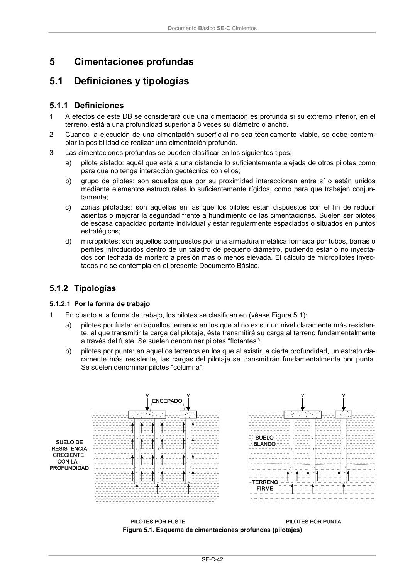

DB-SE-C Cimientos · edición 2019-12-20 · capa oficial
Documento DB-SE-C-oficial · SHA-256 del PDF a71133f4b0dca253e45ea3071c70f2a512354bcc5cd841bf89b1a502f567ac5e
Copia fiel del PDF fuente · Fuente oficial
Ficha de la disposición en la fuente oficial
Formatos: JSON del segmento · Markdown
4.6.5 Comprobaciones finales 1 Antes de la puesta en servicio del edificio se debe comprobar que: a) las zapatas se comportan en la forma prevista en el proyecto; b) no se aprecia que se estén superando las cargas admisibles; c) los asientos se ajustan a lo previsto, si, en casos especiales, así lo exige el proyecto o el Di- rector de Obra; d) no se han plantado árboles, cuyas raíces puedan originar cambios de humedad en el terreno de cimentación, o creado zonas verdes cuyo drenaje no esté previsto en el proyecto, sobre to- do en terrenos expansivos. 2 Si bien es recomendable controlar los movimientos del terreno para cualquier tipo de construcción, en edificios de tipo C-3 y C-4 será obligado el establecimiento de un sistema de nivelación para controlar el asiento de las zonas más características de la obra, en las siguientes condiciones: a) el punto de referencia debe estar protegido de cualquier eventual perturbación, de forma que pueda considerarse como inmóvil, durante todo el periodo de observación; b) el número de pilares a nivelar no será inferior al 10% del total de la edificación. En el caso de que la superestructura se apoye sobre muros, se preverá un punto de observación cada 20 m de longitud, como mínimo. En cualquier caso el número mínimo de referencias de nivelación será de 4. La precisión de la nivelación será de 0,1 mm; c) la cadencia de lecturas será la adecuada para advertir cualquier anomalía en el comporta- miento de la cimentación. Es recomendable efectuarlas al completarse el 50% de la estructura al final de la misma, y al terminar la tabiquería de cada dos plantas de la edificación; d) el resultado final de las observaciones se incorporará a la documentación de la obra. Documento Básico SE-C Cimientos SE-C-42 5
